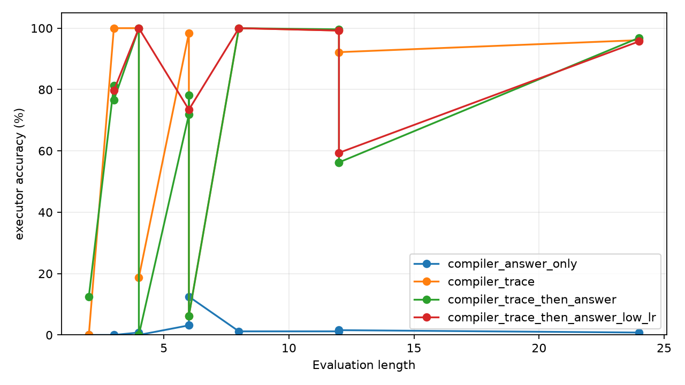
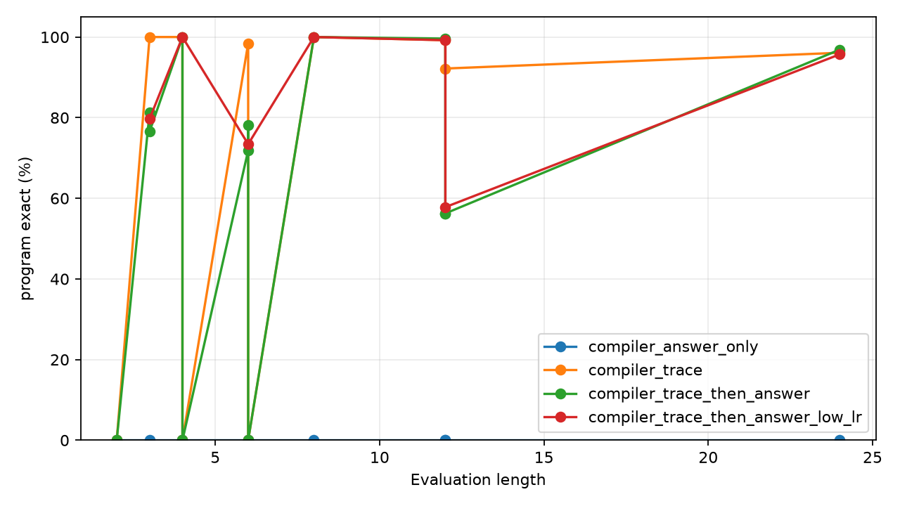

Qwen Trace Bootstrap Retention
Abstract
This experiment tests whether a structured latent program interface can be installed with symbol-trace supervision and then retained when training continues using only final-answer supervision.
A frozen Qwen3.5-4B encoder provides hidden states from modular arithmetic prompts. A small compiler reads those hidden states, emits an initial value and per-step program symbols, and a latent executor computes the final answer.
Task
Initial x = 42. Step: add 17. Step: multiply by 3. Step: subtract 5.
The target is the final value of x modulo 97. The executor supports ADD, SUB, and MUL.
Model
Qwen3.5-4B is loaded in 4-bit and kept frozen. The trainable bridge reads selected hidden states, predicts initial value, operation, and argument logits, and a differentiable executor composes the predicted distributions during training. Strict evaluation argmaxes the compiled symbols and executes them exactly.
Variants
direct: direct answer classifier from frozen Qwen features.compiler_answer_only: latent compiler trained from final answer loss only.compiler_trace: latent compiler trained with trace supervision throughout.compiler_trace_then_answer: trace bootstrap followed by answer-only continuation.compiler_trace_then_answer_low_lr: same schedule with a lower learning rate during answer-only continuation.
Results
| Variant | L=4 exec | L=8 exec | L=12 exec | L=24 exec | L=24 mass | L=24 init | L=24 op | L=24 arg | L=24 program exact |
|---|---|---|---|---|---|---|---|---|---|
direct | 0.8% | 0.8% | 1.2% | 0.4% | n/a | n/a | n/a | n/a | n/a |
compiler_trace | 100.0% | 100.0% | 99.2% | 96.1% | 94.2% | 100.0% | 99.8% | 100.0% | 96.1% |
compiler_answer_only | 0.8% | 1.2% | 1.2% | 0.8% | 1.0% | 0.8% | 33.7% | 0.0% | 0.0% |
compiler_trace_then_answer | 100.0% | 100.0% | 99.6% | 96.9% | 95.3% | 100.0% | 99.9% | 100.0% | 96.9% |
compiler_trace_then_answer_low_lr | 100.0% | 100.0% | 99.2% | 95.7% | 92.8% | 100.0% | 99.8% | 100.0% | 95.7% |


Retention Dynamics
| Variant | Stage | Step | L=24 exec | L=24 mass | L=24 op | L=24 arg |
|---|---|---|---|---|---|---|
compiler_trace | trace bootstrap | 800 | 85.2% | 82.4% | 99.3% | 100.0% |
compiler_trace | trace continuation | 1600 | 96.1% | 94.2% | 99.8% | 100.0% |
compiler_trace_then_answer | trace bootstrap | 800 | 87.1% | 83.5% | 99.4% | 100.0% |
compiler_trace_then_answer | answer retention | 801 | 75.4% | 71.5% | 99.0% | 100.0% |
compiler_trace_then_answer | answer retention | 1600 | 96.9% | 95.3% | 99.9% | 100.0% |
compiler_trace_then_answer_low_lr | trace bootstrap | 800 | 87.1% | 83.5% | 99.4% | 100.0% |
compiler_trace_then_answer_low_lr | answer retention | 801 | 89.8% | 85.5% | 99.6% | 100.0% |
compiler_trace_then_answer_low_lr | answer retention | 1600 | 95.7% | 92.8% | 99.8% | 100.0% |
Interpretation
Final-answer supervision can maintain and refine a latent executor interface once trace supervision has installed it. The answer-only compiler does not learn initial values, arguments, or executable programs from scratch.
The direct answer head uses the same frozen Qwen features and remains at 97-way chance. The gain comes from decomposing the task into compiled symbols and executing those symbols with a fixed latent runtime.
Limitations
The task is synthetic modular arithmetic with standardized text templates. The executor operation set is fixed in advance. The successful recipe uses direct symbol traces during bootstrap. Qwen is frozen, so this experiment tests an attached runtime and bridge rather than full language-model posttraining.
Artifact Layout
experiments/qwen_trace_bootstrap_retention/
large_artifacts/qwen_trace_bootstrap_retention/checkpoints/